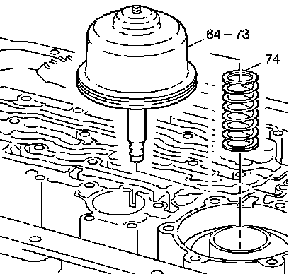
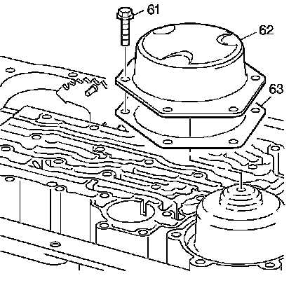

Low and Reverse Band Servo Assembly Installation
Low and Reverse Band Servo Assembly Installation

1. Install the low and reverse accumulator piston spring (74) into the transmission case.
Important: The low and reverse band servo assembly (64-73) is pushed down when tightening the cover bolts. Do not force the low and reverse band servo assembly (64-73) into the servo bore.
2. Install the low and reverse band servo assembly (64-73).

3. Install the low and reverse band servo cover gasket (63).
4. Install the low and reverse band servo cover (62).
Notice: Refer to Fastener Notice.
5. Install the 6 low and reverse band servo cover bolts (61).
Tighten the bolts to 24 N.m (18 lb ft) in an alternating pattern.